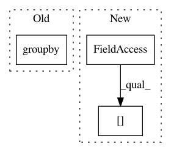

6bd7fc12a7e94dd18d5ce3eee200a6083ccf8756,google_analytics/light_gbm_predict.py,,,#,13
Before Change
final_pred = final_pred.sort(["fullVisitorId"])
final_by_ind = final_pred.groupby(["fullVisitorId"]).sum()
final_by_ind = final_by_ind.add_suffix("_sum").reset_index()
After Change
// aggregate on "fullVisitorId"
// final_test["fullVisitorId" ]
final_pred = final_test[["fullVisitorId"]].copy()
final_pred["train_yht"] = test_y
In pattern: SUPERPATTERN
Frequency: 3
Non-data size: 3
Instances
Project Name: CNuge/kaggle-code
Commit Name: 6bd7fc12a7e94dd18d5ce3eee200a6083ccf8756
Time: 2018-10-18
Author: nugentc@uoguelph.ca
File Name: google_analytics/light_gbm_predict.py
Class Name:
Method Name:
Project Name: CyberReboot/NetworkML
Commit Name: 805eab66e46f4dd77f776cf34f70346fd4279d8a
Time: 2020-04-21
Author: josh@vandervecken.com
File Name: networkml/featurizers/funcs/host.py
Class Name: HostBase
Method Name: _tshark_ports
Project Name: CyberReboot/NetworkML
Commit Name: 805eab66e46f4dd77f776cf34f70346fd4279d8a
Time: 2020-04-21
Author: josh@vandervecken.com
File Name: networkml/featurizers/funcs/host.py
Class Name: HostBase
Method Name: _tshark_ratio_ports